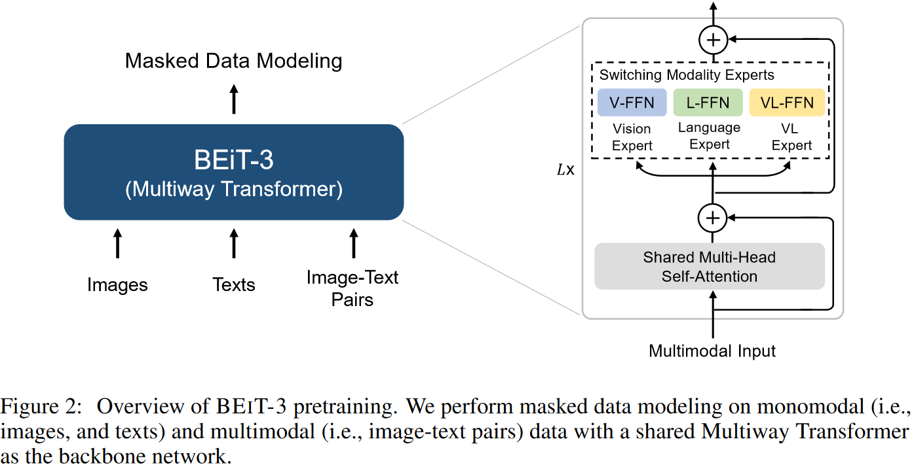
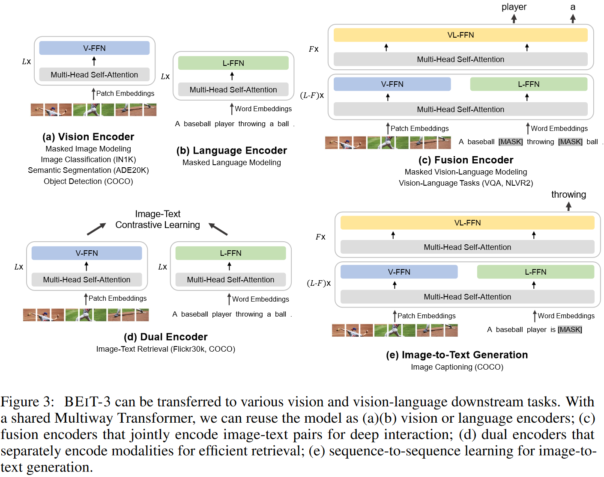
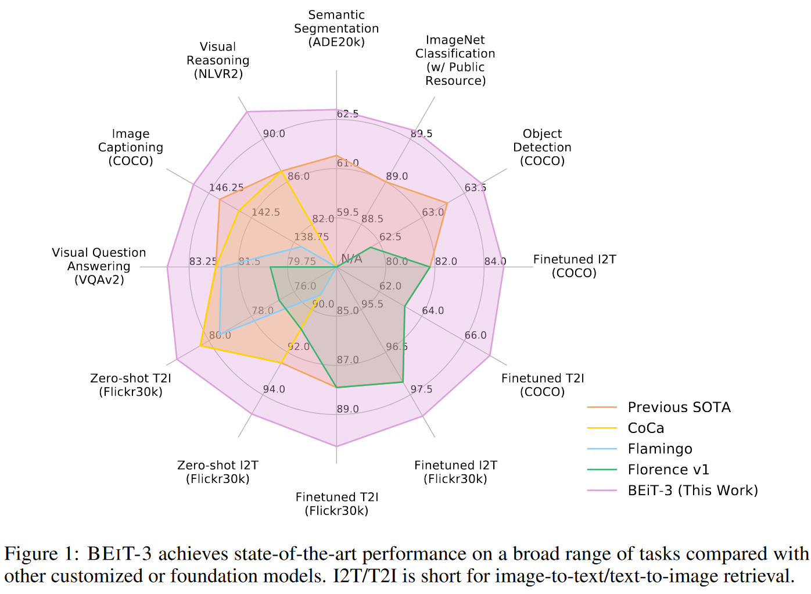
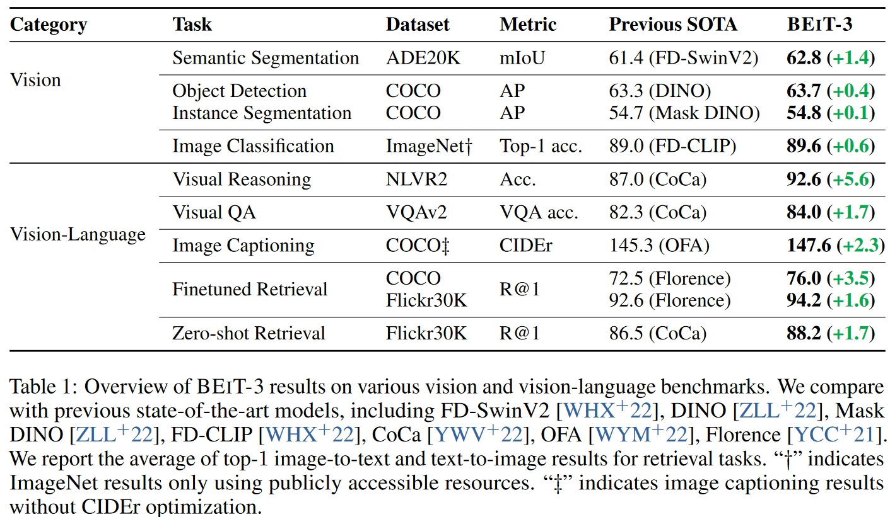

多模态系列(六)- BEiTv3
论文地址：Image as a Foreign Language: BEIT Pretraining for All Vision and Vision-Language Tasks
论文代码：BEiT-3
转载自：多模态系列论文–BEiT-3 详细解析_beitv3 github-CSDN博客
多模态系列(六)- BEiTv3
摘要
BEiTv3的目标非常明确，就是想做一个更大一统的框架，不论是从模型上统一，而且从训练的目标函数上要统一，还有模型大小，数据集大小，如何scale也要统一，作者称之为Big Convergence。BEiTv3就是把图像也看成了是一种语言（这就是他们题目的意思叫做Image as a Foreign Language），文章把Image叫做Imagelish，文本叫做English，然后把图像文本对叫做Parallel Sentence。因为不论是图像还是文本都可以用Mask Modeling去做,所以就不需要ITC，ITM ，Language Modeling或者Word Patch Alignment等各种Loss，只用一个Loss----- Mask Modeling。模型层面用的是他们之前VLMO提出的MOME，也就是文中的Multi-Way Transformers
1. 引言
最近不论是在Language、Vision还是在多模态领域，Big Convergence是大势所趋，也就是在超大的数据集上做大规模的预训练，一旦模型训练好之后，它的特征就已经非常好了，可以直接Transfer到下游任务上去，尤其是当模型足够大、数据足够多的时候，有可能预训练出来一个有通用性能的Foundation Model，这个Foundation Model能解决各种的模态或者各种下游任务，非常的强大。
本文将大一统继续向前推进，彻底将多模态尤其是Vision Language预训练得很好，主要是从以下的三个方面实现大一统：
1. 模型：
从模型角度来说，Transformer非常关键：
1）Transformer框架相比CNN的优势：未来肯定是多模态的，一个模型做所有的Modality，所有的Task，肯定是一个大一统的框架，CNN不太适合做其他的Modality，而Transformer就适合做很多的Modality。从这一点上对比Transformer就胜出了。
2）多模态学习常用框架：Transformer刚开始是NLP用的，然后逐渐用到Vision和多模态领域，现在对于Vision Language Modeling多模态学习来说，有几个常用的方式：
- Clip的Dual Encoder框架：该框架非常适合做快速的Retrieval。
- Encoder、Decoder框架：该框架适合做Generation Task，比如BLIP、Coca。
- Fusion Encoder框架：只用Encoder，但是它有多模态融合部分，ALBEF、VLMO都属于这一类，能做Image Text Encoding。
不论是哪种方式，这些模型在遇到下游任务的时候，因为输入的形式可能会改变或者输出的形式有时候会改变，所以模型需要根据下游任务去做一些改进，不是训练好一个模型就能拿去用，而是在遇到各种各样任务之后还需要进行修改，因此不是真正意义上的General Purpose Modeling。BEITV3用1个统一的Masked Data Modeling模型，每一个训练好的Transformer Block，SA层，或者Feed Forward Network都可以随意的拼装和组合。
2.预训练的目标函数
因为掩码学习已经能够很好的学习图像文本或者多模态的特征，因此本文验证只用这一个目标函数训练模型。这种方式的优点如下：
- 当数据和模型变大的时候，用更多的目标函数训练速度肯定会变慢。
- 多个loss的权重调整比较难，有的Loss之间可能互补，有的Loss之间可能互斥，增加了很多的复杂度。而单个loss训练就比较简单。
因此，本文使用了一个Pretraining Task，就是Mask Then Predict，因为图像经过Vision Transformer Embedding层以后，就变成了一个Sequence of Token，因此可以将图像看成一个Foreign Language叫Imaglish，这样就能将文本和图像用同样的方式去处理，本质上就没有任何区别。多模态的图像文本对就可以把它看成是一个Parallel Sentence，就是句子1后面跟了个句子2，那就没有什么不同了，一切都变成NLP（当然这也从侧面说明Mask Data Modeling目标函数非常的强）。
3.扩大模型和数据集的规模
作者将模型大小扩展到Billions of Parameters，数据集也扩展的非常大，不过用的都是开源数据集，便于学术界去复现。
2. BEITv3预训练框架

模型用了Multi-Way Transformer，前面的自注意力全都是Share weights（Shared Multi-Head Self-Attention），只有后面Feed Forward Network不一样，根据不同的Modality训练不同的Vision、Language、Vision Language三个不同的Expert，然后通过调整不同的Input Modality去选择模型分支。Mask Data Modeling目标函数可能遮住了图像，可能是遮住了文本，模型训练学习去恢复它就可以。
3.下游任务实现框架

做下游任务时候：
- 如图3（a），如果用Vision Encoder，就可以做所有图像任务，包括Classification, Detection和Segmentation。
- 如图3（b），如果用Language Encoder，就可以去做Language的各种任务。
- 如图3（c），如果用Vision Language Fusion Encoder，就可以做多模态的各种任务Vision Language Understanding Task。
- 如图3（d），如果用 Dual Encoder，把这两个Vision和Language分开，变成双塔结构，就可以像CLIP一样做比较高效的Image Text Retrieval，如果Funtune，可以再用ITC去Funtune。
- 如图3（e），如果用Image-to-Text Generation，就可以做生成Captioning任务，给定一句话，将下一个文本Mask掉，然后你Image Grounded的Text Encoder去预测被Mask掉的单词，就可以去做Image Captioning。
4. 实验效果

BEITv3采取了CoCa的多边形图的形式去展现它的强大，这个图里面紫色的这条线就是BEITv3，完全超过之前所有的方法，而且在每个任务上的提升都不小，最重要的是BEITv3这种灵活的结构，就是一个模型，但是它在推理的时候可以拆成各种各样的部分去做下游任务，包括单模态Unimodel的图像问题，比如Segmentation、Classification、Detection，以及各种各样的多模态的任务，Language的任务它也是可以做的，只不过这里没有做对比。

表1具体展示了BEITv3在各任务上的表现，每个任务之前的State of Art是哪些方法，BEITv3具体提升了多少。
- 单模态任务：比如在实例分割数据集ADE20K上，BEITv3就达到62.8，到现在为止应该还都是第一第二，在Coco是63.7，在ImageNet上达到89.6，这个性能是没有用额外的Private Data训练，但是CoCa它用了GFT 3 billion这个Google自有的数据集，所以其他人无法复现。
- 多模态任务：Visual Reasoning的NLVR2这个数据集，BEITv3比CoCa高了5.6个点，别的几个多模态任务，BEITv3表现也都非常好。
虽然BEITv3就是一个模型结构，只用了一个目标函数，而且它的预训练数据集也没有用很多，全都是Public Dataset，但效果非常好，而且模型可以复现。这个从侧面说明了两个问题：
- 不是目标函数越多越好，不是加更多的Regularization，模型就一定会训练的更好，还是得看Loss之间有没有互相弥补的特性。
- 当模型变大、数据变大的时候，其他的Loss函数可能就没必要了。比如说Clip只用了对比学习就训练的很好，BEITv3只用Mask Modeling也训练的很好。
数据也不一定是越多越好，CoCa用了十倍于训练Clip的数据量，几十倍于BEITv3用的数据量，但是BEITv3的性能还反超了CoCa，所以更多时候，数据的质量更关键。
5. 总结
BEITv3其实从方法上来说就是之前BEIT、BEITv2、VLBEIT、VLMO等一系列的工作的一个集合体，本身没有提出新的内容，主要就是把它做大做强，展示了一个Unified Framework能达到的性能。
总之，BEiTv3用一个非常简单而且非常容易扩展的框架，一个目标函数，Mask Modeling，但是效果非常好。